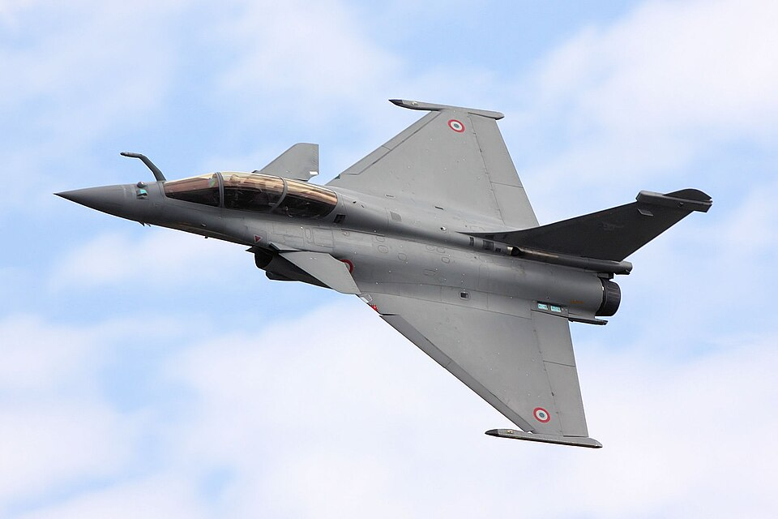
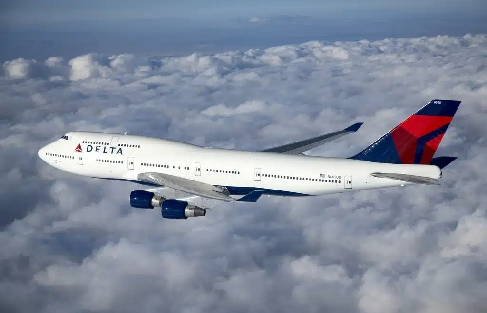
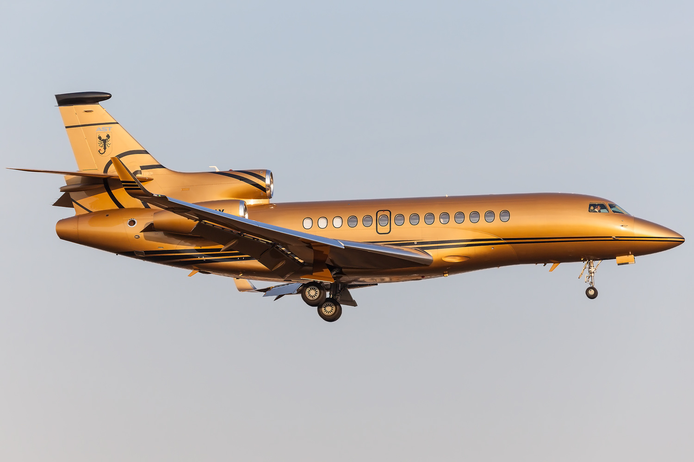
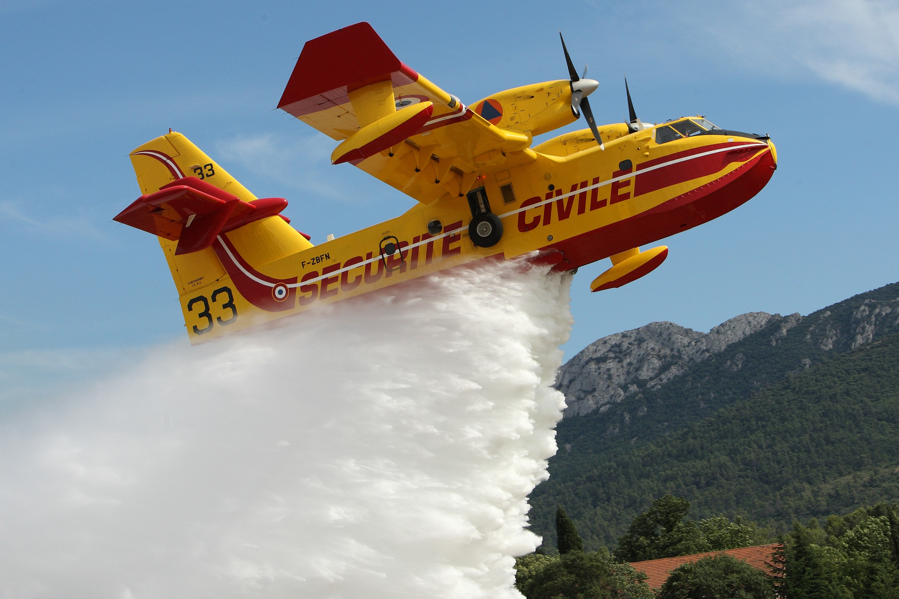
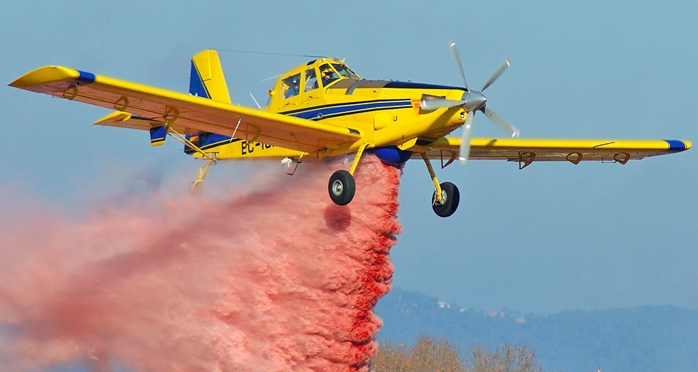

En aviation, la bienveillance n'est pas qu'une qualité humaine — elle est directement liée à la sécurité. Un équipage qui communique bien et se respecte mutuellement commet moins d'erreurs, ce qui réduit les risques d'accidents. De plus, les passagers qui se sentent bien traités sont plus susceptibles de suivre les consignes de sécurité, contribuant ainsi à un environnement de vol plus sûr pour tous.
| Modèle | Domaine | Date | Spécificités techniques | Image |
|---|---|---|---|---|
| AVION DE CHASSE Dassault Rafale |
Militaire | 2001 |
|
 |
| AVION COMMERCIAL Boeing 747 |
Civil | 1970 |
|
 |
| AVION D'AFFAIRES Dassault Falcon 7X |
Privé | 2007 |
|
 |
| AVION DE SECOURS Canadair CL-415 |
Secours | 1994 |
|
 |
| AVION AGRICOLE Air Tractor AT-802 |
Agriculture | 1990 |
|
 |